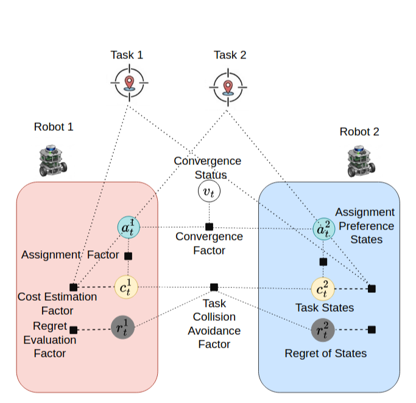
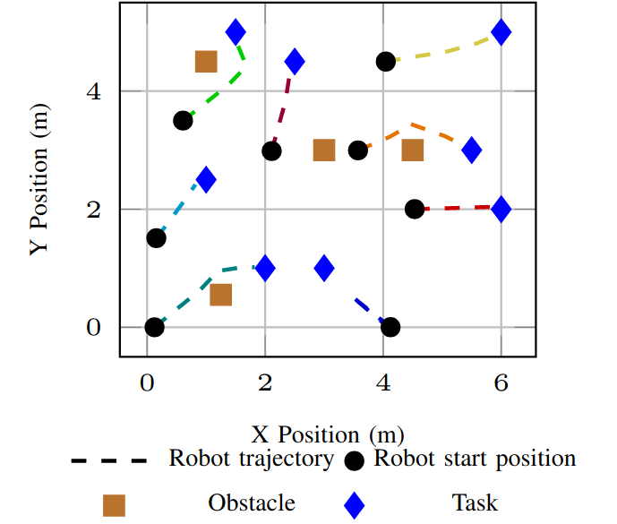
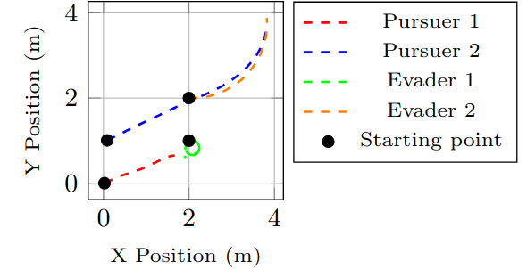
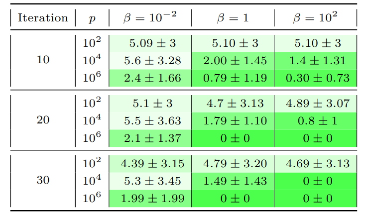

Gaussian Belief Propagation Based Task Allocation
GBPTA is a fully distributed framework for multi-robot multi-task allocation using Gaussian Belief Propagation, designed to coordinate robots under uncertainty and communication constraints.
Distributed Task Allocation Under Uncertainty
GBPTA formulates multi-robot task allocation as a distributed inference problem using Gaussian Belief Propagation.
Multi-robot systems are used in various fields such as autonomous transportation and delivery. A key component in enabling these systems is task allocation, which becomes significantly more complex when coordinating multiple robots. For solving the task allocation problem, the challenges extend beyond those faced by a single robot, requiring robust coordination strategies. Moreover, a critical factor in evaluating multi-robot systems is their ability to operate reliably in real-world, dynamic environments. In many scenarios, ground-truth information about robots and tasks may be unavailable, demanding methods that can function with noisy observations and handle substantial uncertainty.
In this paper, we propose GBPTA, a fully distributed framework for the multi-robot multi-task allocation problem, using Gaussian Belief Propagation for solving the one-to-one assignment problem using an end-to-end factor-graph-based approach, where all steps are represented as factors. The proposed framework is applied to two scenarios: multi-robot pursuit-evasion and package pickup and delivery. GBPTA can operate in different environments and under varying communication radii. Moreover, the proposed approach can handle problems in which multiple features must be considered for task allocation. Through various simulations and hardware experiments, we show that GBPTA achieves near-optimal task assignments. GBPTA improves assignment utility, defined as the negative total distance between robots and tasks, by 23.95% over distributed Hungarian and reduces makespan by 71.57% over DANCeRS.
What GBPTA Provides
Fully Distributed
Robots collaboratively solve the task allocation problem without relying on a centralized coordinator.
One-to-One Assignment
Differentiable factors encourage robots to select distinct tasks and avoid assignment conflicts.
Uncertainty Handling
Gaussian Belief Propagation allows the framework to operate using noisy observations and uncertain states.
Multiple Scenarios
The framework is demonstrated using pursuit-evasion, pickup and delivery, simulation, and hardware experiments.
Paper and Numerical Examples
The paper and numerical examples are available in the PDF below. The numerical examples are highlighted in blue-shaded boxes.
Open Paper PDF →
Experimental Highlights
Selected quantitative results from the GBPTA evaluation.
Example Scenario
An example task allocation scenario illustrating the evolution of robot-task assignments.
GBPTA Factors
The task allocation problem is represented using differentiable factors within a Gaussian Belief Propagation framework.
Run a GBPTA Task Allocation Scenario
Configure the initial poses of robots and tasks and start the visualization.
Enter the initial $x$, $y$, and $\theta$ values for each robot and task.
Real-World Experiments Comparison
Comparison of task allocation behavior using GBPTA and DANCeRS in a real-world robot experiment.
GBPTA
DANCeRS

Real-World GBPTA Experiment
Physical robot experiments demonstrating GBPTA in action.

GBPTA in Different Scenarios
The framework is evaluated in multiple multi-robot coordination scenarios.
Pursuit-Evasion
Example pursuit-evasion experiments demonstrating distributed task allocation between multiple robots.
Multi-Robot Pursuit
Additional pursuit-evasion visualization illustrating task assignment behavior.
Pickup and Delivery
Multi-robot package pickup and delivery experiment using distributed task allocation.
Shape Formation Demonstration
Sahape formation experiment using GBPTA and DANCeRS for comparison.
Comparison with the State of the Art
Comparison GBPTA with DANCeRS.
Over 100 random test cases, the total distance traveled by the robots, makespan, and maximum distance traveled by any individual robot were evaluated. As can be seen, the total distance traveled by the robots, the makespan, and the maximum distance traveled by any individual robot are lower for GBPTA than for DANCeRS.
Ablation Study
Evaluation of the individual components of the GBPTA framework and their effects on task allocation performance.
Different hyperparameters and factors affect the performance of the proposed solution. To investigate the effects of the penalty scale $p$ in Eq. (13) and $\beta$ in Eqs. (15) and (12), we evaluate the sum of the convergence values, $ \sum_{i=1}^{N_p} \sum_{j=i+1}^{N_p}v^{ij}_t$, over the iterations for a task allocation problem with four pursuers and four evaders. The experiments are conducted over 100 simulation runs. As shown in the ablation results below, increasing the penalty scale $p$ from $10^2$ to $10^6$ generally leads to faster convergence of $v$. Increasing $\beta$ also generally accelerates convergence. Removing the Task Collision Avoidance Factor ($f^{ct_{ij}}_t$) and using $\epsilon \geq 1$ in $f^{v_{ij}}_t$ can lead to repeated assignments, causing multiple robots to be assigned to the same task.

Scenario Comparison
Video comparison of the task allocation scenario.